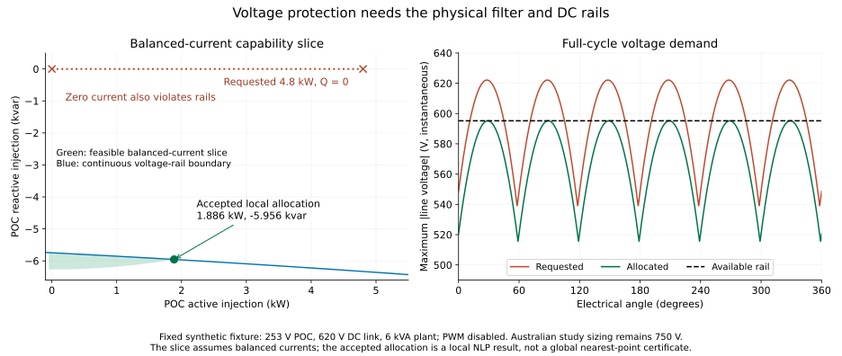

Constraint-based inverter operation
ConstrainedInverter adds operating constraints to an AdvancedInverter. It is an alternative to the forward SequenceController, which retains its existing current limiters and defaults. Start with From current limits to operating rules for a worked P–Q explanation, then use this page as a formulation reference. Choose according to the question being studied:
| Formulation | Selects the operating point through | When a current limit binds |
|---|---|---|
ControlledDevice(plant, SequenceController(...)) | Prescribed current-command equations | The selected limiter backs off the command |
ConstrainedInverter(plant, VoltVarWattConstraints(...)) | An explicit dispatch objective, or a specified dispatch | The current inequality restricts feasible P while the Q equality remains |
The second formulation is an OPF feasible set. Maximising export over a network does not establish that an autonomous local controller will select that point, or that it will be dynamically stable. Neither option is a certification model.
Select an operating mode
# Free Q, bounded active dispatch, PV source, balanced grid-arm current.
operating = InverterOperatingConstraints(p_min=0., p_max=4000.,
q_min=-2000., q_max=2000.)
device = ConstrainedInverter(plant, operating;
current_allocation=:balanced_grid, dc_source=DCSourceBounds(p_min=0.))
# Alternatives: FixedReactivePower(600.) or FixedPowerFactor(.95, :absorbing).
operating = InverterOperatingConstraints(reactive=FixedPowerFactor(.95, :absorbing))Name the direction explicitly: :absorbing takes reactive power while exporting, :injecting supplies it. The single-argument form stores the signed value: for positive P, positive PF absorbs Q and negative PF supplies Q. The relation is $|pf|Q+sign(pf)\sqrt{1-pf^2}P=0$ for either direction of active power. It imposes neither a direction nor a balanced-current assumption; PF at zero complex power is undefined. Zero PF is rejected. Optional P/Q bounds compose with any reactive mode. Use VoltVarWattConstraints for a voltage-dependent Q equality; the general policy rejects a second, ambiguous Q law.
DCSourceBounds(p_min=0) permits loss imports at the AC port, while preventing net DC charging. Signed bounds can model a bidirectional source. Omitted bounds retain the previous availability-only behaviour. Source bounds are physical DC power bounds, not bounds on POC active power or a battery energy model.
Physical and operating relationships
For VoltVarWattConstraints, positive injection and the declared voltage curve impose total POC reactive power
\[Q_{POC}=q_{scale} f_{VV}(V),\qquad P_{DC}\le P_{available}.\]
The voltage input and reference come from the declared positive policy and sensing_reference. For sensing=:average_voltage, the input is the arithmetic mean of the three RMS phase magnitudes. Curve encodings use the same smooth, flat-extended PWL functions as the existing controller. A missing Q curve imposes zero total POC Q in VoltVarWattConstraints. A missing watt curve gives a fraction of one in that policy, and the ceiling is still imposed: with the rated basis it caps P at $P_{rated}$, as the forward controller's $\min(P_{rated}f_{VW},P_{available})$ command does. The general InverterOperatingConstraints policy leaves Q free by default and adds no watt ceiling when its watt curve is absent; add p_max for a rated cap. The same positive-sequence policy object therefore yields different ceilings in the two wrappers, by design.
For volt_watt_basis=:rated,
\[P_{POC}\le P_{rated} f_{VW}(V).\]
For :available, define the solved AC availability $A=P_{upper}-(P_{DC}-P_{POC})$, where $P_{upper}$ is the tighter of request availability and an optional DC source upper bound, and impose $P_{POC}\le f_{VW}(V) A$. Together with the independent DC bound this is equivalent to $P_{POC}\le\min(A,f_{VW}A)$. When $A<0$, the full loss import is retained. DC availability is not incorrectly treated as lossless AC output.
$A$ uses the solved losses, so the ceiling depends on the operating point: more reactive current raises filter and conduction losses and lowers it. Firmware that scales a separately measured or estimated available power can differ by those losses, and the product $f_{VW}(V)\,(P_{DC}-P_{POC})$ adds a nonconvex term to the model.
The plant retains all declared per-conductor RMS current, capacitor and ripple limits, along with switching-voltage feasibility. power_limit_location selects its apparent-power circle: :converter by default or :poc for total PCC exchange, including the PCC shunt. Phase, neutral and capacitor current ratings may be omitted independently; their physical equations remain active. There is no radial P/Q allocation, common current scale, or automatic Q slack. An impossible reactive request gives an unsuccessful solve. Physical limits are not relaxed to make a voltage curve feasible.
This path normalises capability rows and operating power rows by the device rating. This keeps the solver's constraint-bound relaxation small in physical units when a small inverter is embedded in a large network power base. Forward-controller stamping also normalises engineering capability rows.
The wrapper supports three-phase THREELEG, FOURLEG and SPLITDC plants with `gridforming=false. The default:balancedconverterimposes zero and negative sequence converter current (without duplicating the three-leg zero-sum row).:balancedgridimposes balance on the grid arm;:freeleaves current allocation to the optimiser within topology and capability bounds. Balanced grid current and three-leg converter zero sum can be incompatible with a grounded LCL shunt under zero-sequence voltage: infeasibility is a valid physical result. Q tracking includes the filter and optional POC shunt through the plant's total POC exchange.pwm_strategy=:NONE` is required; fixed calibrated RMS current reserves are supported, but automatic carrier reserve iteration is not part of this solve.
Offline voltage-aware current allocation
project_inverter_current supplies an offline allocation reference at a fixed terminal voltage. It minimizes the sum of squared complex-current errors while retaining the physical plant, source bounds and full-cycle rail checks. The requested converter-arm or grid-arm current is independently reconstructed through the filter and audited before solving for an alternative.
allocation = project_inverter_current(plant, request;
grid_voltage=poc_rms_phasors, requested_current=command_rms_phasors,
target=:converter, dc_source=DCSourceBounds(p_min=0.))
allocation.request_feasibility # :feasible, :violated or :unresolved
allocation.plant_feasibility # :feasible or :unresolved
solve_status(allocation) # status of the local allocation solveA violated request and an accepted alternative distinguish a command outside capability from an impossible operating boundary. An unsuccessful NLP establishes neither plant infeasibility nor controller-policy infeasibility. If the direct request audit passes, that point itself establishes conditional plant feasibility even if the allocation solver fails. A singular converter-to-grid filter transfer leaves the direct request audit unresolved; it is not labelled infeasible. The allocated point's report also independently verifies that the fixed voltage and balancing charge match the requested boundary in SI units. For continuous rails, a negative conservative lower enclosure alone also does not prove a violation: the direct diagnostic requires a violating sampled witness.
Voltage feasibility can require changing the direction of current, rather than scaling it toward zero. For example, a synthetic balanced 253 V boundary with a 620 V DC link rejects a 4.8 kW unity-PF command but admits a point near 1.886 kW / -5.956 kvar on the same 6 kVA plant. These values are a regression fixture, not changes to the Australian study's 750 V hardware. Reproduce this case, a feasible nominal request and energized zero-PV operation with the same fixed plant:
julia --project=. scripts/formulations/inverter_current_projection.jl /tmp/current_projection.jsonThe optional JSON artifact records hardware, solver settings, source fingerprints, requested-point failures and the allocated point's individual physical checks.

The left panel restricts the capability slice to balanced currents; it is not a projection of the full sequence-current feasible set. The right panel uses the saved requested and allocated phasors to show their instantaneous line-voltage envelopes. Regenerate with scripts/formulations/plot_current_projection.py.
The reference uses a local nonconvex solve; it does not certify a globally nearest point or implement reactive-priority VV+VW. Voltage is fixed, so there is no feeder feedback or dynamic stability claim. For split links, the explicit midpoint_charge (default zero) is fixed in both the request audit and the solve; these results are conditional on that actuator state. PWM is disabled. The local priority-aware reference below adds measured-voltage allocation; feeder feedback, optimized balancing charge and EMT remain separate work.
Local voltage-aware reactive priority
allocate_inverter_services selects a command through staged physical solves at a fixed measured POC voltage:
- Track total POC Q as closely as locally feasible.
- Hold that achieved reactive service and maximize POC active export.
- Hold both powers and allocate requested negative-sequence current along its declared complex ray on the selected converter or grid arm.
The stages share the full filter, source, current, power, thermal and modulation model. Each stage must pass its own SI audit before the next runs. Fixed voltage, sequence-command, preserved-power and volt-watt conditions receive independent checks. The available-power ceiling uses a conservative enclosure of recomputed DC power. A failed stage retains its diagnostics and issues no command.
r = allocate_inverter_services(plant, request;
grid_voltage=poc_rms_phasors, reactive_request=-2600.,
active_fraction=1., volt_watt_basis=:rated, target=:converter)
r.current_command # nothing unless every stage publishes
r.stages # all stage results, including failures
r.plant_feasibility # :feasible or :unresolved
r.policy_feasibility # :feasible or :unresolvedDefault reactive_mode=:within_request permits Q between zero and the requested value. Explicit :protective_override permits a different Q when protection requires it, while minimizing tracking error before considering P. This changes the controller policy. It is never a fallback hidden inside a failed strict solve. An optional unrestricted physical projection can demonstrate feasible plant operation after a failed first stage, but it is returned only as a diagnostic. Local solver failure establishes no global infeasibility of either feasible set.
Within the requested Q ray, the model maximizes a bounded service coordinate and then fixes that coordinate. Adding a nearly coincident Q equality to the active Q interval produced a spurious LOCALLY_INFEASIBLE P stage for the Australian worst-phase request; fixing the service coordinate preserves Q without that redundancy. No per-case solver retry is used. In protective-override mode, the tracking epigraph is removed after fixing achieved Q, leaving no unused tracking variable in the P objective.
evaluate_voltage_aware evaluates the exact mean, worst-phase or positive-sequence VV+VW laws and calls this allocator. Supply sensed phasors as InverterControlMeasurement and the physical grid_voltage separately. The adapter requires reactive priority and Q→P→I₂ sequence order. Voltage-admittance droop is supported; current-dependent ripple blending is explicitly rejected. All three-leg hard limits remain active. More I₂ can increase losses, so strict P-before-I₂ ordering may leave little support when DC availability binds.
These are solver-based local control references. They change allocation relative to the algebraic limiters and do not replace the fixed-structure controller stamp. Nonconvex local solutions do not prove globally best service allocation. Solver latency, dynamic stability and response times require separate validation. The voltage-aware fleet solver couples the local references to feeder equations; its independent closure checks are described in the verification guide.
Reproduce seven fixed-boundary examples with the unchanged Australian hardware and the separately declared synthetic rail fixture:
julia --project=. scripts/formulations/inverter_service_allocation.jl /tmp/service_allocation.jsonThe saved scripts/formulations/inverter_service_allocation_reference.json records per-stage checks and source fingerprints. Six cases issue accepted commands; the strict synthetic Q-ray case remains unresolved while its independent diagnostic finds feasible plant operation. The local Australian comparisons are fixed-measurement tests, not new feeder or chronological results.
Four-leg phase control
PerPhaseVoltVarWatt uses each sensed phase-neutral RMS voltage to evaluate its exact VV and VW curves. Each phase's Q base and rated P base are one third of the total request bases. It requires an explicit neutral, topology=:FOUR_LEG, a non-GFM plant and disabled PWM. Use evaluate_voltage_aware at fixed physical phasors or solve_voltage_aware_inverter_fleet for network feedback. The implicit solve_controlled_inverter path does not implement this policy.
The allocation first maximizes one common fraction of the three requested reactive powers, then fixes that fraction and maximizes total active power. POC phase active powers are equal; phase currents generally are not balanced. Consequently the most restrictive phase VW ceiling also constrains the other phases' active export. With volt_watt_basis=:available, each phase uses one third of the shared AC availability after total solved losses. There are no independent phase PV sources or inferred phase VA ratings. The total VA bound does not by itself bound large opposing phase reactive powers; declare phase and neutral current ratings when these engineering bounds are required.
policy = PerPhaseVoltVarWatt(volt_var=vv, volt_watt=vw,
volt_watt_basis=:rated, current_target=:converter)
controlled = ControlledDevice(four_leg_plant, policy)
allocation = evaluate_voltage_aware(controlled,
InverterControlMeasurement(sensed_phase_neutral), request;
grid_voltage=physical_phase_neutral)allocate_phase_inverter_services exposes the same allocation with explicit three-element Q requests and VW fractions. Only reactive_mode=:within_request is supported. Hardware, source, continuous rails and phase-policy checks gate every stage; a failed stage returns no command. Optional unrestricted projection is a separate physical witness and never substitutes another policy. Neutral ratings are RMS bounds, not peak switching-current ratings. Neither this quasi-static reference nor its per-phase curves establish connection-standard conformity, dynamic stability or an EMT-validated controller.
Embedded PWM thermal allocation
Set pwm_strategy=:CENTERED and f_sw on a monolithic three/four-leg plant to include switching-current stress inside the constrained dispatch and Q→P→I₂ allocation stages. The phase/DC ratings are unchanged. An open carrier-frequency DC source is required; automatic AC-current reserve closure, finite carrier source branches and split-link PWM allocation are explicitly rejected here. The existing standalone inverter reserve-loop solver retains its separate scope.
The formulation integrates the ideal shared-carrier second moment analytically for fundamental current/voltage phasors. It bounds the DC voltage denominator over the whole cycle and encloses the voltage-norm smoothing error. This is a dispatch-dependent expression, not a factor calibrated at another point. Independent numerical integration of exact carrier dwell probabilities checks actual frozen-current RMS and modulation feasibility after each solve.
AC switching ripple also produces bridge DC current at zero fundamental current. The allocation now includes an all-duty bound on that contribution, plus a passive-damping residual. It requires an L filter with proportional passive R/L; LCL dynamics are rejected by this embedded thermal model. The bound is computed once per filter geometry with exact rational event integrals and outward-rounded Bernstein subdivision. It enters the smooth NLP as a bus voltage squared coefficient. See the derivation.
This uniform bound can be conservative. For example, the retained four-leg fixture with zero neutral inductance exhausts its 1 A budget with the all-duty reserve alone. Such a result remains unresolved: infeasibility of a sufficient bound does not prove physical infeasibility. No hardware rating is enlarged.
ConstrainedInverter(...; pwm_thermal_headroom=0.10) reserves an additional validation allowance on the frozen-current component. This allowance does not bound semiconductor dynamics. The local allocators and voltage-aware fleet use the same default. Representative EMT at the declared filter, switching frequency and source assumptions is still required. Capacitor ESR weights, any independent i_sw, and calibrated AC RMS reserves continue to compose with the new term.
At a maximum-Q thermal boundary, an exact Q lock can make the P-stage feasible set tangent and singular. PWM stages therefore preserve higher-priority service within a declared 0.0001 var/W SI budget. Hardware limits and physical acceptance tolerances are unchanged; raw ALMOST_LOCALLY_SOLVED points remain unpublishable. This is bounded numerical lexicographic preservation, not a weighted objective or a hidden protective-Q override.
Nonlinear capacitor energy
Set dc_energy_model=:nonlinear on a monolithic three/four-leg plant to keep the specified mean DC voltage while bounding the actual nonlinear capacitor waveform. dv2_max still means the peak Fourier 2ω voltage coefficient. Optional v_dc_min and v_dc_max independently bound voltage extrema. Total low-frequency capacitor current includes the waveform's higher even harmonics; the declared low-frequency ESR weight applies to this group.
The nonlinear option composes with embedded centered PWM in constrained models and voltage-aware allocation. It assumes constant input power and a fixed mean loss. Finite small-signal source branches and split links are rejected. Implicit forward-controller backoff and standalone PWM reserve closure retain their linearized scope; use the voltage-aware allocator for the nonlinear option. Both PWM and nonlinear-energy stages use the explicit 100 µvar/W service preservation budget. See the energy equations in the foundations chapter and dc_link_energy_diagnostics for independently reconstructed quantities.
Compare saturation at a fixed 207 V POC
This ideal, lossless example fixes POC voltage to isolate capability allocation from network feedback. Zero filter impedance is a deliberate idealisation.
using PowerOptLab
using BMOPFTools: parse_bmopf
net = parse_bmopf("""
{"bus":{"poc":{"terminal_names":["a","b","c","n"],
"perfectly_grounded_terminals":["n"],"v_min":[180,180,180],"v_max":[280,280,280]}},
"voltage_source":{"vs":{"bus":"poc","terminal_map":["a","b","c"],
"v_magnitude":[207,207,207],
"v_angle":[0,-2.0943951023931953,2.0943951023931953]}}}
"""; from_string=true)
plant = AdvancedInverter(id="pv", bus="poc", topology=:THREE_LEG,
phase_terminals=["a","b","c"], neutral=nothing,
s_max=6000., i_max=1.1*6000/(3*230),
v_dc=800., c_dc=2e-3, r_filter=0., x_filter=0.)
intent = VoltVarWattIntent(
volt_var=PWLFunction([207.,220.,240.,258.], [.44,0.,0.,-.60]),
volt_watt=PWLFunction([253.,260.], [1.,.2]),
sensing=:average_voltage, volt_watt_basis=:rated)
encoding = VoltVarWattEncoding(
volt_var=LocalC2Formulation(.01), volt_watt=LocalC2Formulation(.01))
request = InverterControlRequest(p_available=6000., p_rated=6000., q_scale=6000.)
policy = VoltVarWattConstraints(intent, encoding)
device = ConstrainedInverter(plant, policy)
constrained = solve_constrained_inverter(net, device, request;
objective=:max_export, solver_options=("tol" => 1e-9,))
forward = solve_controlled_inverter(net,
ControlledDevice(plant, SequenceController(lower_positive_policy(intent, encoding);
limiter=CommonScaleLimiter(pq_priority=:var))), request;
solver_options=("tol" => 1e-9,))
@assert constrained.solve.publishable && forward.solve.publishable
@assert abs(constrained.operation.q_constraint_residual_var) < .05
[(model="forward controller", P_W=forward.plant.p_poc, Q_var=forward.plant.q_poc),
(model="operating constraints", P_W=constrained.plant.p_poc, Q_var=constrained.plant.q_poc)]2-element Vector{@NamedTuple{model::String, P_W::Float64, Q_var::Float64}}:
(model = "forward controller", P_W = 5333.986030554951, Q_var = 2613.0741473974067)
(model = "operating constraints", P_W = 5321.279008615166, Q_var = 2639.6192307692304)Ignoring the small curve-smoothing effect at the endpoint, the forward model delivers approximately 5334 W and 2614 var. The constrained model delivers approximately 5321 W and 2640 var. In this balanced idealisation, $S_{effective}=\min(S_{rated},3VI_{max})=5940$ VA, so the independent capability oracle is $P=\sqrt{5940^2-2640^2}$. The constrained model curtails about 13 W more active power and retains the requested reactive power.
Fixed dispatch and composition
fixed = solve_constrained_inverter(net, device, request;
objective=:feasibility, p_set=4000., solver_options=("tol" => 1e-9,))
@assert fixed.solve.publishable
(P_W=fixed.plant.p_poc, Q_var=fixed.plant.q_poc)(P_W = 4000.0, Q_var = 2639.6192307692304)For an external OPF, call stamp_device!(ctx, device; request) inside the model hook. The returned handles expose physical plant quantities through inverter_handles(device, handles). The stamp adds no objective, so the caller can select cost, export, a fixed dispatch, or another criterion. Use extract_device(device, handles, solve_status) after solving. For a fleet, stamp each device in the shared model; a sum-of-export objective represents coordinated fleet optimisation. The existing ControlledInverterFleetSpec continues to describe the forward-controller formulation.
For a complete multi-device example, see full network OPF and independent validation. It includes three inverters, floating neutrals, mutual line coupling, native and hook voltage-bound formulations, binding network limits and a separate four-wire power-flow replay. The public solve_status(model) overload supplies the extraction status for composed models.
Read the diagnostics
result.plant reports physical SI quantities. result.operation reports:
q_target_varandq_constraint_residual_var: the encoded curve equality;q_exact_target_varandq_tracking_residual_var: the exact PWL policy at the solved voltage, separating curve approximation from electrical feasibility;volt_watt_margin_Wandexact_volt_watt_margin_W: encoded and exact cap slack;dc_availability_margin_Wandac_available_W: the physical power budget;- current, selected-location apparent-power, switching-voltage and DC ripple margins.
power_limit_location, apparent_power_rating_VA and apparent_power_margin_VA identify the enforced circle. converter_apparent_power_margin_VA and poc_apparent_power_margin_VA are nothing at the inactive location.
General policies also report reactive_mode, current_allocation, source bounds and source/P/Q margins. Fixed PF has fixed_pf_residual_VA; free Q and PF have nothing for Q targets and tracking residuals. A missing watt ceiling in InverterOperatingConstraints similarly returns nothing for cap margins. Four-leg/split-link results include neutral RMS, midpoint and capacitor margins.
Margins are positive inside their limits. Undeclared optional limits return nothing. Failed solves retain SolveStatus and return NaN numerical outputs. There are no invented limiter scales or exact-current replay fields for this feasible-set formulation. As with the other nonlinear solvers, a successful solve provides a local solution and does not prove global optimality or global infeasibility.
Reproduce forward operation through optimisation
The executable reproduction cases compare independently solved feeder equilibria, saturated proportional limiting and sequence-priority allocation. They distinguish agreement under matched assumptions from the intentional saturation difference above.
Simulation and optimisation formulations
Here, simulation means the algebraic forward controller at a fundamental-frequency network equilibrium. It does not mean time-domain or switched EMT simulation. The physical plant is shared; operating relationships and the selection objective determine which feasible point is selected.
| Concept | Forward simulation (SequenceController) | Optimisation (ConstrainedInverter) | Support / equivalence condition |
|---|---|---|---|
| Network, reduced filter, primitive matrices, LCL, POC shunt | Plant KCL/KVL and prescribed current | Same plant KCL/KVL and dispatchable current | Implemented; compare powers at the same location |
| Three-leg zero sum | Plant requires converter I0=0 | Same topology equality, including :free allocation | Implemented; topology does not require I2=0 |
| Current allocation | Positive/negative sequence commands at converter or grid target | :balanced_converter, :balanced_grid, or :free | Implemented; LCL capacitor current makes the two balance choices distinct |
| Volt-var | Curve produces a Q command before limiting | VoltVarWattConstraints imposes total POC Q equality | Implemented; saturation can intentionally produce different Q |
| No reactive curve | Zero Q command | VoltVarWattConstraints: Q=0; InverterOperatingConstraints: Q free | Explicitly different defaults |
| Fixed Q / signed PF / free Q | No dedicated fixed-PF policy; a constant curve can prescribe Q | FixedReactivePower, FixedPowerFactor, FreeReactivePower | Implemented on total POC powers; PF does not select current sequences |
| Volt-watt | Active command, rated or AC-available basis | Upper bound on POC P with the same curve/basis | Implemented; maximum export can reproduce an unsaturated command |
| P/Q dispatch bounds | Request and controller prescribe operation | Optional p_min, p_max, q_min, q_max | Implemented; inconsistent bounds and service remain infeasible |
| DC source availability and charging | Request availability with loss-aware command | Request upper bound plus signed DCSourceBounds | Implemented; p_min=0 declares non-charging PV; default has no lower bound |
| Converter/grid conductor current and neutral RMS | Command backoff plus hard plant inequalities | Hard plant inequalities | Implemented, including fixed switching RMS reserves |
| Apparent power | P/Q command allocation and plant-aware backoff at the selected boundary | Hard S circle at power_limit_location | Converter default; :poc includes the whole filter and PCC shunt |
| Proportional current limiter | Scales both current sequences / P and Q together | No implicit limiter; optional explicit current-ray restriction plus maximise scale | Reproduction example provided; the ray is an extra operating assumption |
| Sequence priority | Reserve one sequence, fill headroom with the other | Fix admissible reserved sequence and maximise other-sequence scale | Fixed-measurement reproduction provided; arbitrary network-equilibrium equivalence is not established |
| Negative-sequence admittance / ripple cancellation | Prescribed negative-sequence current law | :free exposes sequence choices; physical sequence/ripple caps still apply | Law-specific optimal objectives or exact command graphs remain future work |
| Internal voltage and switching utilisation | Same sampled switching hull and voltage boxes | Same hard bounds | Implemented; sampled hull is an outer approximation, audit switching_margin |
| DC 2ω ripple and finite line-frequency source | Plant ripple circuit and backoff | Same hard circuit/capability constraints | Implemented; source impedance here differs from signed DC power bounds |
| Four-leg / split-link neutral, midpoint, capacitor heating, ESR | Physical plant; controller wrapper remains three-leg | THREELEG, FOURLEG, SPLIT_DC plants; common/individual bank bounds compose | Implemented for three-phase optimisation; split midpoint balancing remains bounded by configured charge authority |
| Semiconductor and capacitor losses | Same physical loss equations | Same physical loss equations under either power direction | Implemented; no objective-dependent inflatable loss epigraph |
| Carrier PWM reserve closure | Plant solver has post-solve carrier iteration/audits | Fixed reserves supported; wrapper requires pwm_strategy=:NONE | Automatic optimisation closure remains future work |
| Single phase / grid forming | Plant supports legacy single phase and fixed balanced internal EMF; not SequenceController | Wrapper rejects both | Dedicated operating laws remain future work; no GFM droop or dynamic-stability claim |
| Curve encoding | Smooth local/global encodings and separate exact numeric evaluator | Same smooth voltage encodings, exact residual audit | Exact PWL graphs in complete inverter models remain future work |
| Objective / fleet / time coupling | Objective should not change prescribed operation; forward fleet/study APIs exist | Caller chooses objective and can stamp devices in a shared model | Composition implemented; dedicated constrained-fleet/DOE/time APIs remain future work |
| Hardware sizing / variable DC rail | Existing controller parameter/sizing studies | Fixed physical hardware in this wrapper | Continuous design variables and DC energy/rail dynamics remain future work |